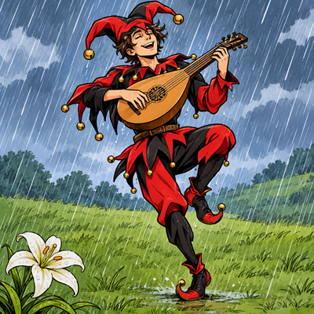

~~ IX ~~
- Te sonrojas cuando llueve, y hablas raro y distinto, tanto, que no puedo comprender todo lo que dices.
- Pero no lo hago con maldad.
- Sé que las nubes te incomodan de forma miscelánea y que te gustaría reverberar durante toda la noche. Si me dieses la mano cuando salimos de paseo yo podría cantarte al despertar.
- ¿De verdad lo harías?
- Las notas no las sé, y desafina mi do-re-mi, pero cuando me siento a la sombra de un pino suelo verdear y huelo a jazmín. ¿Recuerdas lo que me dijiste ayer? ¿Aún piensas cumplirlo?
- Hoy es otro día y hace un fuerte atardecer. Te daré la mano pero si nos miran te soltaré y haré como que nos acabamos de conocer. Si salgo corriendo será por tu culpa.
- Una ingratitud concomitante me reservas sin pensar en nada más. Cuando el tiempo haya pasado de largo me vestiré todo de negro y todo de azul. Luego querrás saber por qué ya no te regalo rosas cuando te despiertas. ¿No lo has notado? El aire está más entusiasmado y mañana no iremos a pasear.
- ¿Me volverás a dar la mano algún día? Yo no sé si querré, pero puedes intentarlo si quieres.
- Tengo que pensar en muchas cosas que tengo muy olvidadas. Estaré ocupado mucho tiempo. Puede ser posible que gaste todo un día o incluso más. Si termino pronto pensaré un poco en ti y si se me hace de noche dejaré de pensar y sólo te recordaré.
- Si me recuerdas pronto me alegraré todo el día.
- Entonces estamos de acuerdo.
Fin.